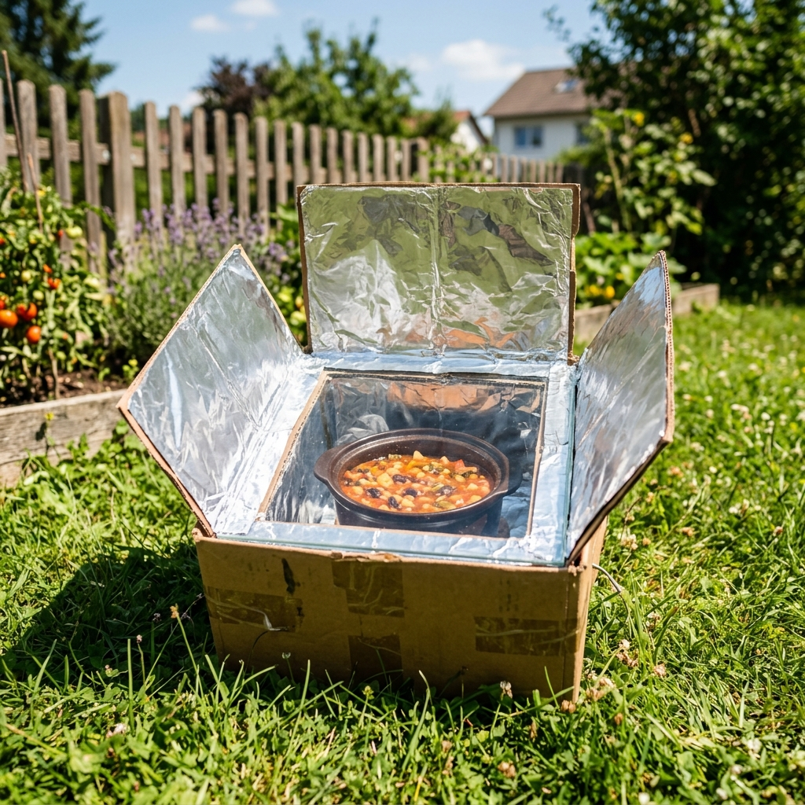

55K visualizacionesHorno Solar Portátil de Caja de Cartón
El horno solar de caja es un dispositivo de cocción pasivo basado en el efecto invernadero y la concentración de la radiación solar. Es una alternativa ecológica de de emergencia idónea para cocinar legumbres, verduras o pan sin gas ni electricidad.
Beneficios para tu Cuerpo y Salud
Cocina de forma suave y a baja temperatura constante (100°C-120°C). Esto preserva mejor las vitaminas, enzimas y antioxidantes sensibles de los vegetales frente a las frituras a altas temperaturas que desnaturalizan proteínas y generan compuestos nocivos.
Lista de la Compra y Costes
- Dos cajas de cartón (de distinto tamaño)0.00 €
- Papel de aluminio doméstico (1 rollo)1.50 €
- Lámina de vidrio o metacrilato (30x40cm)2.50 €
- Periódicos viejos y cola blanca0.50 €
Proceso Paso a Paso
- 1
Forra completamente el interior de la caja pequeña y el interior de la caja grande con papel de aluminio, pegándolo bien con cola blanca.
- 2
Coloca periódicos viejos arrugados en el fondo de la caja grande para que sirvan de aislante térmico.
- 3
Introduce la caja pequeña centrada dentro de la caja grande, rellenando todo el espacio libre circundante con más papel de periódico compactado.
- 4
Pinta el fondo de la caja pequeña de negro mate utilizando una cartulina negra o pintura ecológica base agua.
- 5
Construye una tapa de cartón ajustable para la caja exterior, recortando una ventana central que coincida con el tamaño de la caja pequeña.
- 6
Pega la lámina de vidrio en el hueco de la ventana central de la tapa, sellando las juntas.
- 7
Construye una pestaña de cartón abatible forrada de aluminio en la tapa que sirva de reflector solar. Coloca tus recipientes en el fondo del horno, tápalo y oriéntalo al sol.
Usos Alternativos del Producto
- Pasteurizador de agua de de emergencia manteniendo botes de agua a 70°C durante 1 hora.
- Secador de legumbres húmedas o cereales en días soleados.
Información de Interés Científico
La radiación visible solar atraviesa el vidrio y calienta el fondo negro del horno, transformándose en radiación infrarroja de onda larga. Como el vidrio es opaco a esta radiación infrarroja, el calor queda atrapado en el interior, cocinando los alimentos lentamente.
Evaluación Detallada de Impacto
Tabla Comparativa Comercial (España)
| Característica | Opción Casera (Abuela) | Equivalente Comercial (Supermercado) | Evaluación / Ahorro |
|---|---|---|---|
| Consumo de Gas/Luz | 0W (Energía solar pasiva) | 2000W (Horno eléctrico convencional) | Ahorro del 100% |
| Toxinas de Fritura | 0% Compuestos acrilamidas | Altos en fritos y asados industriales | Cocina saludable |
| Peligro de Incendio | Muy bajo (Sin llamas ni electricidad) | Peligro de sobrecalentamiento eléctrico | Seguro |
| Residuos de Materiales | Materiales reciclados (Cartón y periódico) | Hornos metálicos industriales | Biodegradable |
Comentarios y Experiencias